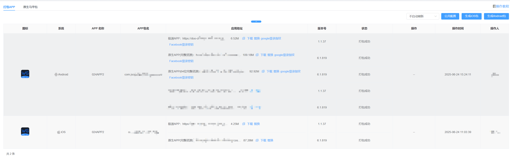
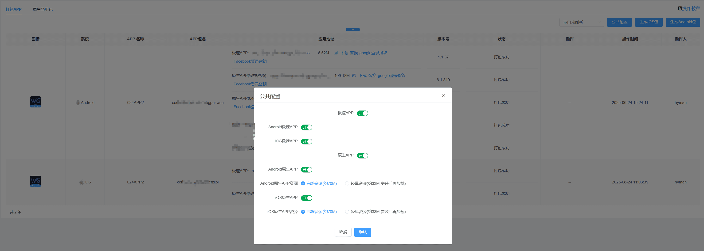
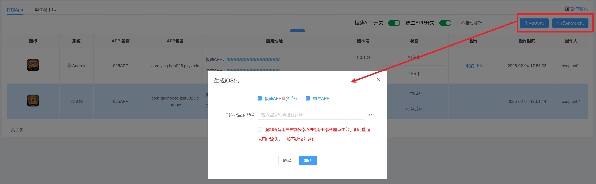
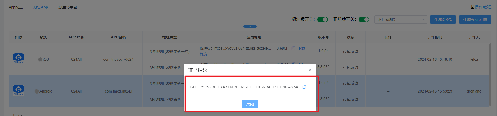
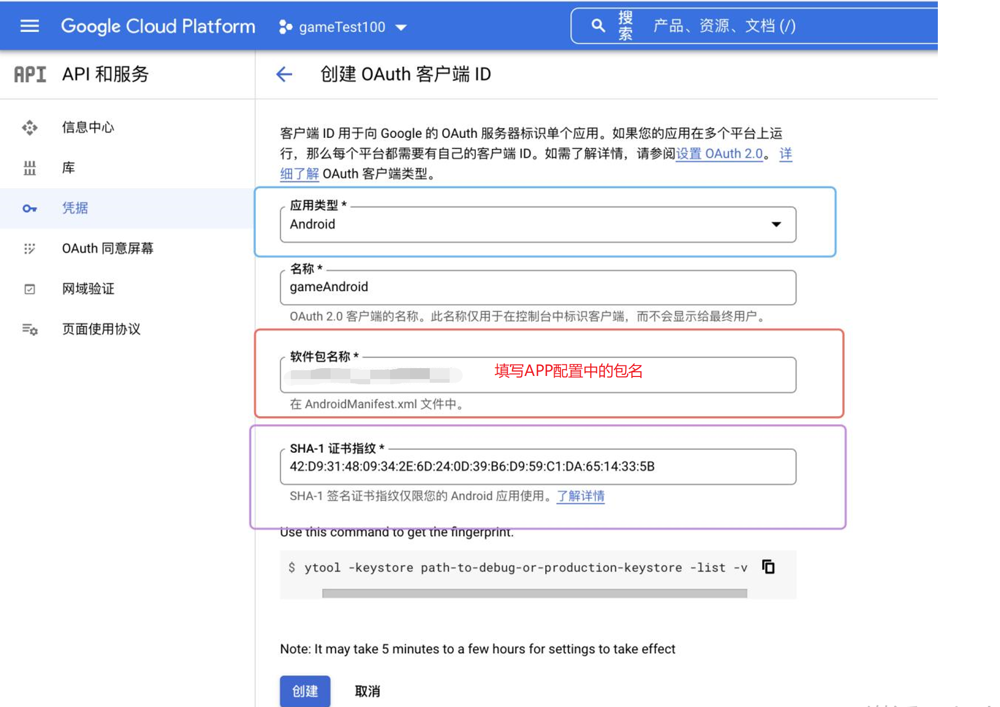
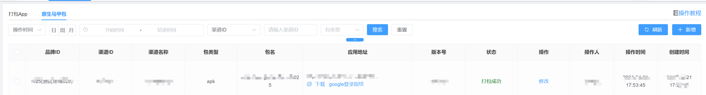
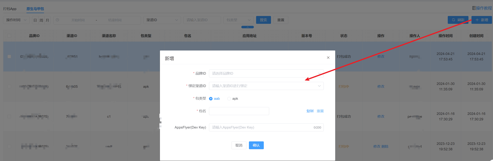

APP包管理
一、打包APP
简要说明：展示已创建的APP包包含安卓和iOS包

【公共配置】
简要说明：APP类型开关控制前台是否展示该APP类型和打包时是否打包该类型 注：完整资源和轻量资源功能没有区别，仅包体大小区别，轻量包将部分资源放到服务器。

1、图标：数据取品牌设置中的APP设置APP图标
2、系统：Android和iOS
3、应用地址：对应包的下载地址
4、版本号：当前包对应的版本号
5、状态：分3种状态（打包中/打包失败/打包成功）
【生成iOS包/Android包】
点击右上角一键生成IOS与一键生成Android应用,可选择不同版的APP包生成，前提条件需APP包配置--配置APP相关参数信息；若持续出现打包失败情况，请马上与我们联系
注：强制所有用户重新安装APP：玩家APP版本需要低于当前版本号

【证书密钥】

设置android 签名密码 会影响谷歌快捷登录 ，只需要把打包成功重新生成的证书指纹，去谷歌开发者平台更换成最新的证书指纹 谷歌快捷登录其他配置不需要更改 只换SHA-1证书指纹

设置android 签名密码 ，异常问题解决方案
1、修改apk签名后，站点打包使用的签名就和其他站点不同，以免默认签名被标记，安装时提示不安全
2、修改apk签名也有副作用，修改后，三方登录的配置需要修改（sha-1证书指纹）
3、apk签名可以默认，不是必须要改，只建议安装有报毒的apk修改
4、apk签名修改后，新打的站点包、渠道包都会使用新签名，老包也能正常使用
5、清空apk签名，则使用默认签名 6、修改apk签名后，只针对新打的包生效，老包还是老签名
二、原生马甲包
简要说明：展示已创建的马甲包（aab、apk）

【新增】
点击右上角新增不同品牌的渠道对应不同马甲包

各类型APP优劣势：
PWA：基于Chrome浏览器的一种渐近式Web应用，可以安装到桌面，使用感受接近APP
优点：快速安装，无需下载包，如果无需特殊原生能力，体验和极速APP相当
缺点：体验没有安装类APP
原生：基于APP原生代码开发的APP
优点：兼容更好，性能更好，可以支持的能力和可能性更多
缺点：包体积较大
极速：基于H5+Webview封装成的APP
优点：兼容性较好，包体积更小
缺点：整体体验不如原生APP，但是差距不会很大
桌面快捷方式：浏览器的基本功能，类似于浏览器快捷链接
优点：增加一个桌面的快捷入口，方便查找和打开。免安装
缺点：和H5体验完全相同